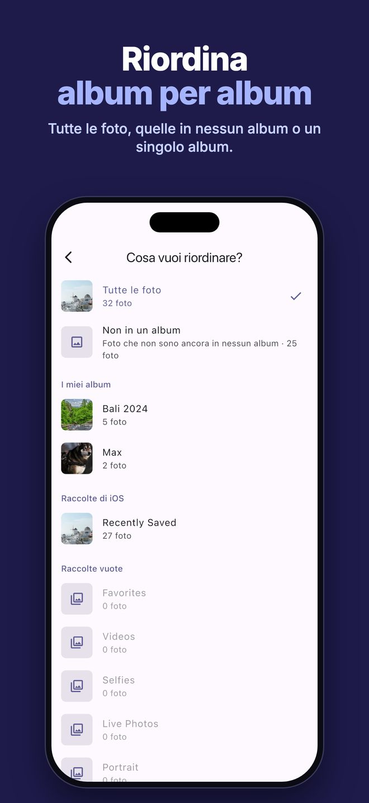
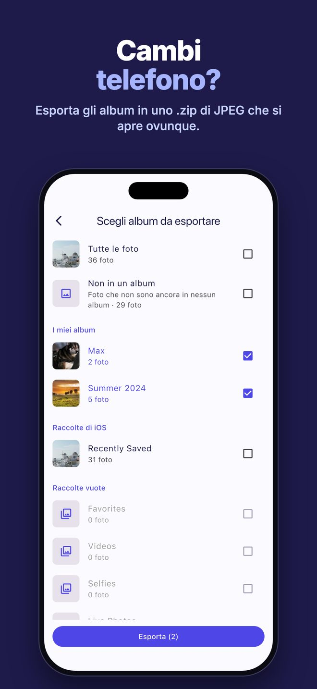
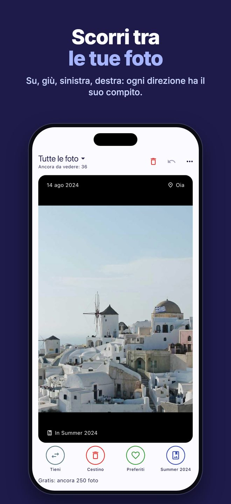
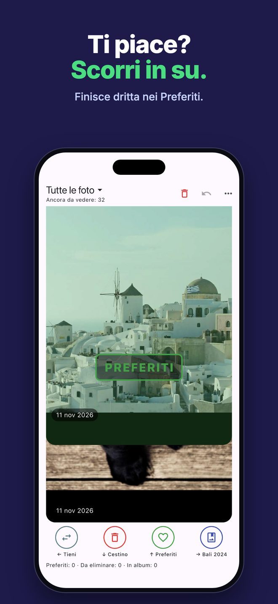

Album per album
Riordina tutta la libreria, solo le foto che non sono ancora in nessun album, oppure un singolo album, come quello delle chat o gli Screenshot. Su ogni foto vedi in quali album si trova già.
Photo Sensei ti mostra le foto una alla volta. Scorri in su, giù, a sinistra o a destra e la foto è sistemata: scegli tu cosa fa ogni direzione.
Scarica su App Store0,99 € una volta sola · niente abbonamento, mai · niente pubblicità · nulla lascia il tuo iPhone

Riordina tutta la libreria, solo le foto che non sono ancora in nessun album, oppure un singolo album, come quello delle chat o gli Screenshot. Su ogni foto vedi in quali album si trova già.

Esporta uno o più album in un unico file .zip, una cartella per album, con foto JPEG che si aprono ovunque, anche su Windows. L'esportazione non elimina nulla.

Tieni, metti nei Preferiti, nel cestino, in un album, toglila da un album o nascondila. Ogni direzione fa quello che scegli tu, e ogni decisione si può annullare.

Le foto eliminate vanno in Eliminati di recente, e iOS chiede una sola conferma per tutte. Nascondere funziona allo stesso modo.
Photo Sensei funziona tutta sul tuo iPhone. Niente account, niente cloud, niente tracciamento, niente pubblicità. Le foto non lasciano mai il telefono, e l'etichetta privacy dell'App Store dice “Nessun dato raccolto”.
No. Le foto che scorri verso il cestino vengono solo segnate. Finiscono in Eliminati di recente quando tocchi “Elimina ora” e confermi la richiesta di iOS, e puoi recuperarle dall'app Foto per 30 giorni.
No. Photo Sensei si compra una volta sola (0,99 € in Italia; negli altri paesi l'App Store adegua il prezzo). Niente acquisti in-app, niente pubblicità.
Mai. L'app non ha account e non usa la rete. Quando esporti uno .zip, il file viene creato sull'iPhone e va solo dove scegli di condividerlo.
Sì. Annulla ripristina l'ultima decisione, anche l'aggiunta o la rimozione da un album. Le foto da eliminare o da nascondere restano intatte finché non confermi.
Copie JPEG delle foto degli album scelti, una cartella per album. Il JPEG si apre su qualsiasi computer, Windows compreso.
Su qualsiasi iPhone con iOS 13 o successivo. Album e Nascondi richiedono l'accesso completo alle foto.
Problemi o idee? Scrivi a info@optiapp.it.